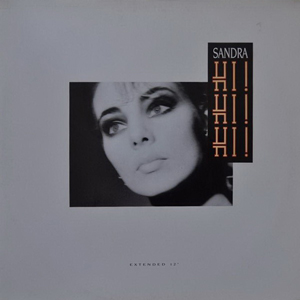
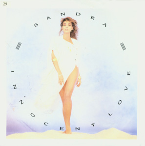
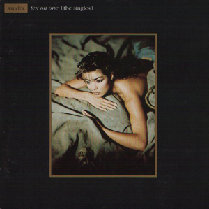
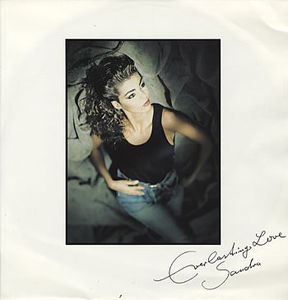
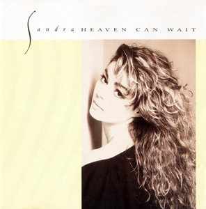
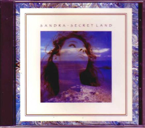
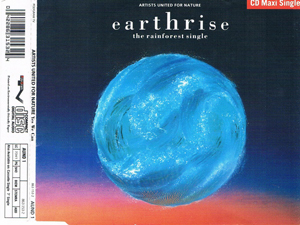

1976 - Andy Mein Freund (7'') (Sandra Ann) · 19761984 - Japan Ist Weit (7'') · 19841984 - Sandra - Japan Ist Weit · 19841985 - (I'll Never Be) Maria Magdalena (12'') · 19851985 - (I'll Never Be) Maria Magdalena (7'') · 19851985 - The Long Play · 19851985 - The Long Play (1992 - Holland - 786 968 2) · 1985

1986 - Hi! Hi! Hi! (12'') · 1986

1986 - Innocent Love (12'') · 19861986 - Little Girl (12'') · 1986
1987 - Midnight Man (12'') · 19871987 - Stop For A Minute (12'') · 1987

1987 - Ten On One (The Singles) · 1987

1988 - Everlasting Love (PWL Remix) · 1988

1988 - Heaven Can Wait (Single) · 19881988 - Into A Secret Land · 19881988 - Secret Land (7'') · 1988

1988 - Secret Land (Single) · 19881989 - Around My Heart (Single) · 1989

1989 - Earthrise - The Rainforest Single - Yes We Can (Single) (Artists United For Nature) · 19891989 - We'll Be Together ('89 Remix) · 19891989 - Yes We Can (Artists United For Nature) · 1989